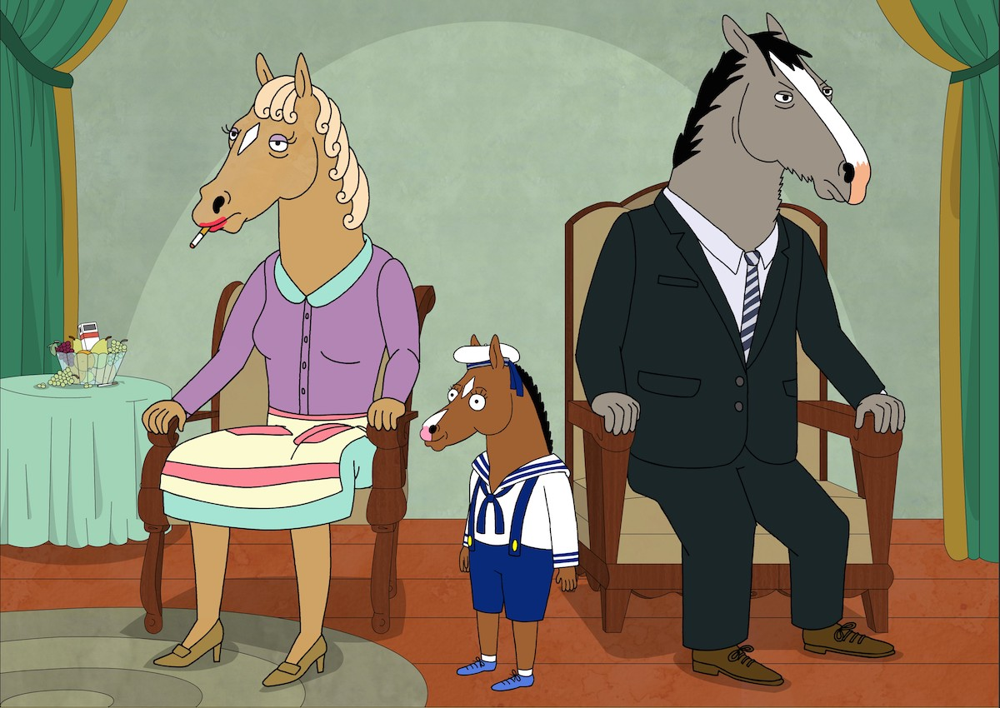

Note: This essay was written for an undergraduate developmental psychology course.
Parenting style is a deeply nuanced topic without a one-size-fits-all solution when it comes to raising a child. Take it from me, a 21 year old without children. The way in which a parent raises their child can have profound effects on the qualities and traits of that child as they grow up, from childhood into adulthood. In the Iowa State University Digital Press, Joel Al Muraco and colleagues discuss the parenting styles proposed by Diana Baumrind: authoritative, authoritarian, permissive, and uninvolved. These four parenting styles balance levels of support given and demand required in the parent-child relationship. Each style has benefits and drawbacks in terms of happiness, self-esteem, obedience and competence, though in the western world, the authoritative style is considered to produce children who are generally happy and capable. As discussed in class, through the lens of the psychoanalytic theory, the quality of parent-child interactions are the context that can determine a person’s ability to manage impulses, have healthy behavioral patterns, and the way in which one experiences guilt, anxiety, and self-esteem. Newman and Newman explore the influences of a parent on their child during the phallic stage and found that parents play a key role in the formation and development of the superego, the self-critical conscience. As the superego suppresses the unacceptable urges of the id and holds the internalized ideals and morals instilled by parents and society, it is essential for parents to set a positive example for their children, else the children may be impulsive or overly self-critical.
In 2019, researchers Ali Bahari et al. sought to discover the relationship between the rumination on parenting style, childhood trauma, and adulthood depression. The researchers state that rumination has been considered important in understanding the persistence of depression, and that parenting types and childhood traumas are related to both rumination and depression, though they have not been simultaneously studied to unfold greater details. The researchers hypothesized that care and overprotection are associated with rumination, and that rumination plays a mediating role between parenting styles and the symptoms of depression. In this retrospective study, the researchers sampled a population of students from various universities in Tehran. The final sample contained 175 students (57.7% female, 42.3% male), between 18 and 35 years of age (mean age was 21 years with a standard deviation of 2.75 years). These participants then completed the 2nd version of the Beck Depression Inventory, a ruminative response scale, a parental bonding instrument, and a childhood trauma questionnaire. The obtained data was then analyzed via the use of ANOVA tests, path analysis, mediation analysis, and correlation calculations. The results showed that limited maternal care and the perception of emotional abuse in the child can induce rumination and depression, while maternal overprotection can be reflected in the lack of development in adaptive coping strategies, leading to passive coping strategies like rumination. The study concluded that parenting styles, childhood traumas, and their interactions are crucial to the development of rumination and depression, and consequently, the prevention as well. However, the study was limited through the small sample size, as well as the exclusive use of questionnaires, which could have restricted or masked the obtained results. Additionally, the study emphasized the role of parent-child interactions in the formation of coping strategies, and did not take into account other environmental factors.
In preparation for this assignment, I rewatched a number of episodes of the Netflix show Bojack Horseman, the adult animation that tells the story of an actor who has passes his prime and struggles to deal with his deteriorating fame, depression, addiction, and maintaining the few good relationships in his life. Bojack was the child of Butterscotch and Beatrice Horseman. His alcoholic father was a failed novelist, his abusive and neglectful mother was the heiress to a wealthy sugar cube company, and the two walk the line between being uninvolved and authoritarian parents. When Bojack was a child, he was caught stealing a cigarette from his mother, where she then forced him to smoke it all. Between tears, Bojack asked if he was being punished for stealing or smoking, to which Beatrice responded, “I’m punishing you for being alive.” As young Bojack was likely in the phallic stage during this interaction, the words of his mother would have a great impact on the development of his superego. Since the superego pertains to the self-image and the self-conscience, the words of his mother would make him develop a sense of self-hate and low self-esteem, as he would then internalize that his existence is worth punishment and that he is a burden. Furthermore, the relationship between his parents was broken and the only reason the couple remained together is because they had a child, Bojack. Beatrice hated her marriage and wished she could take it back, resulting in her resenting the child that trapped her in a life she doesn’t want. She said to a young Bojack, “You ruined me… You better grow up to be something great, to make up for all the damage you've done.” Upon hearing this, Bojack would internalize that he was born a burden, which would support his developing negative self-image, and would further attribute to his belief that he has to somehow compensate for being alive by being exceptionally successful in his mother’s eyes.
As discussed in the conclusion of the study by Ali Bahari et al., limited maternal care in combination with emotional abuse can lead to rumination and depression. Bojack is shown frequently ruminating about his parents, specifically the relationship he had with is mother, and his depression and is displayed through a lack of self-worth, self-destructive behavior, and suicidal ideation. Additionally, Bojack is shown to have similar traits to his father when dealing with the problems of life: drinking as a form of escape, projecting anger onto others, and feeling worthless. This could be explained through Freud’s Oedipus complex, where a son replicates his father actions and traits in an attempt to gain the affection and attention of the mother. Bojack deeply lacks any affection from his mother and as a result has learned to model his father’s behavior in an unconscious attempt to gain his mother’s attention, despite the loveless marriage between the parents.
I’ve struggled with depression since early high school, and I credit it to a combination of my parents’ parenting styles, genetics, and the 21st century world. In contrast to Bojack’s mother, my mom lives to show love to her children. Consequently, she was always there to take care of me when something went wrong, which meant I didn’t need to develop a set of skills to cope with depressive symptoms, as I could rely on my mom to make me feel better (I have since developed a great set of coping strategies). Conversely, my father has been less present in my life, primarily due to divorce and a demanding job. During the peak of my depression, I frequently ruminated on my relationship with him, and thus I somewhat relate to the study results mentioned earlier. I don’t mean to say that I wish my parents had different parenting styles, as I love them both and I am eternally grateful for everything they have taught me. However, I acknowledge the influence of their parenting on who I am today, and I am glad to be me. I wouldn’t want to be anyone else. I hope one day that Bojack Horseman will feel the same.